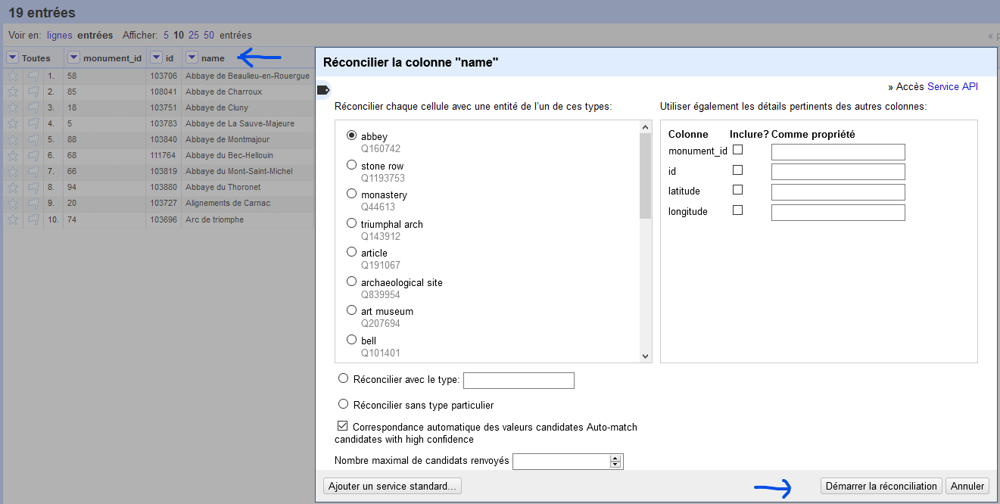

Bienvenue dans le tutoriel
Viens en apprendre plus...
Tout d’abord il vous devez choisir un set de donnée, pour se faire je vous propose d’aller sur le site : https://www.data.gouv.fr/fr/ , pour ma part j’ai choisi une liste des coordonnées GPS des monuments nationaux : https://www.data.gouv.fr/fr/datasets/liste-des-coordonnees-gps-des-monuments-nationaux/ Petite astuce, évitez des formats trop lourd car cela risque d’être compliqué pour OpenRefine.

Commencement
Pensez à sélectionner le fichier au format CSV(rouge), Si des caractères particulier apparaissent tel que é sélectionner dans champ formats des caractères l’encodage UTF-8(bleu), afin de ne pas avoir une surcharge du nombre de ligne de votre set de donnée vous pouvez sélectionner “Charger au plus” ce qui vous permettra de choisir le nombre de ligne affichées(jaune). Afin de pouvoir mieux s’y retrouver, il vous est possible de changer le Nom de votre projet (rose). Vous êtes prêt à passer à l’étape suivant en cliquant sur “Créer un projet”(vert)
Suite
Nous allons utiliser l’extension Wikidata qui est une base de connaissance collaborative. Nous allons nous focus sur la colonne “name” (bleu)pour réaliser une réconciliation avec justement Wikidata, cliquer sur la flèche bleu juste à côté de “name”>”réconciliation”>”Démarrer la réconciliation” puis sélectionner “wikidata”>”Démarrer la réconciliation”(flèche bleu) Le partie gauche correspond aux entités de Wikidata et la partie droite permet d'ajouter des données si l’on souhaite être plus pointilleux. Un encadrement jaune va s’afficher permettant de voir l’avancement de la réconciliation.
Si vous avez de la chance la réconciliation sera déjà faite sinon se sera à vous de choisir la meilleur correspondance ce qui peut être assez barbant dans certain cas.
Aboutissement
Après avoir finis cela il vous suffit d’aller en haut à droite de OpenRefine et d’exporter votre projet dans le format que vous souhaitez, pour ma part, je vais l’exporter en xls afin de pouvoir y accéder via excel/sheets
Grâce à l’export en xls je faire des liens entre ces données et d’autre base de donnée afin de les rendres le plus complète possible. Les noms en bleu sont alors cliquable et me redirige vers le wikidata correspondant.